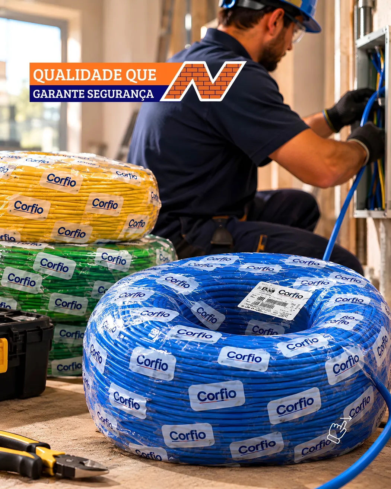

Fios e cabos
A Narciso já divulgou cabos Corfio; consulte bitolas, cores e comprimentos disponíveis.
Para manutenção e instalação elétrica, o primeiro passo é ter o projeto ou a lista com as especificações corretas. Consulte materiais elétricos e cabos com a Narciso, em Vila Velha.
Loja física: Rua Barra Nova, 195 · Vale Encantado, Vila Velha · Abrir rota no Maps

Os produtos mostrados representam a vitrine da loja, não um estoque em tempo real. Consulte marcas, modelos, quantidades e preços diretamente com a equipe.
A Narciso já divulgou cabos Corfio; consulte bitolas, cores e comprimentos disponíveis.
Informe o tipo de serviço para solicitar componentes complementares.
Envie a referência técnica do material procurado para facilitar a conferência.
A seção do cabo precisa seguir o dimensionamento feito pelo profissional habilitado.
Comprimentos e cores são importantes para a cotação e a identificação correta.
Instalações devem seguir normas aplicáveis e ser executadas por profissional qualificado.
Na Rua Barra Nova, 195, Vale Encantado, Vila Velha – ES. Para solicitar preços e saber se um produto está disponível, informe medidas, quantidades e marcas desejadas pelo WhatsApp.
Solicitar orçamento pelo WhatsApp →Confira as orientações ou fale diretamente com a Narciso.